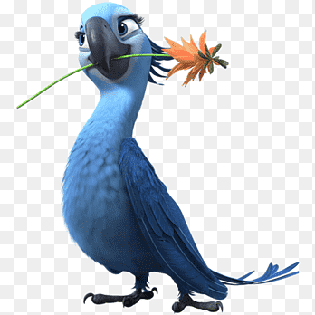
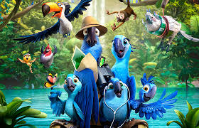
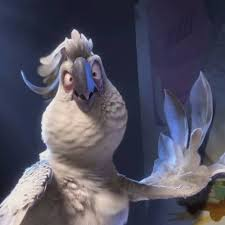

Nossa ararinha Jade se perdeu em sua viagem, iremos ajudar ela nessa aventura, diga o quato está animado

Por ser de especie rara, é muito importate a gente levar ela de volta pra sua família, como você quer fazer isso:

1 passo é fazer perguntas aos conhecidos

Achamos duas pistas
Não sabem onde ela está, acharam uma pena e uma pochete
Ligaram falando de uma pena e uma pochete
Achamos 2 pessoas
Pergunte aos funcionários

Essa não é a pena da Jade

A pochete está vazia

Foi ele que sequestrou ela, parabéns você achou a Jade!

Só viu ela conversando com o pássaro branco